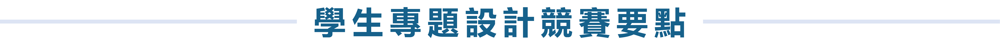

目的
本學會為激勵學生透過設計將人因工程知識實施於生活環境之中，促使人類生活更美好、更便利，特訂定本競賽要點。
辦理單位
- 主辦單位 ：中華民國人因工程學會、南臺學校財團法人南臺科技大學
- 協辦單位 ：科技部工程技術研究發展司工程科技推展中心、科技部工業工程與管理學門、國家中山科學研究院、財團法人醫院評鑑暨醫療品質策進會、勞動部勞動及職業安全衛生研究所、國立高雄科技大學資訊管理系、國立高雄科技大學工業工程與管理系
參賽資格
- 全國大專院校學生及研究生均可組隊參加，每隊人數以 5 人為限。每團隊須有指導老師 1 人，並鼓勵邀請產業界人士共同指導。指導教授不限指導一組團隊，但每位學生最多僅能報名參加一團隊，且每團隊僅能以一件作品參賽。
- 符合上述第一項條件之學生均可報名參賽，而參加初審之團隊指導教授須為中華民國人因工程學會有效之會員，入圍決審之團隊中至少一位學生須為中華民國人因工程學會有效之學生會員。
- 參賽作品須為作者原創，且在就學期間完成者。參賽作品由參賽者與指導老師同時列名作者。
競賽主題
與「疫後新生活人因設計」相關之日常用品、醫療、科技、教育、服務等等為設計標的，運用人因工程相關知識為民眾在疫後時代創造更便利的生活，並提升人民生活品質。
參賽時程
| 活動項目 | 日期 | 說明 |
|---|---|---|
| 報名截止 | 2022年01月14日（五） 2022年01月21日（五） |
報名網址 A3表板檔案 智慧財產同意書 |
| 資格審查與初審 | 2022年01月15日（五）至 2022年01月28日（五） 2022年02月15日（二） |
|
| 入圍隊伍影片上傳 | 2022年03月04日（五） | 影片上傳表單 |
| 競賽決選與得獎名單公布 | 2022年03月11日（五） | 寄送通知信並公告於大會網站 |
| 頒獎典禮 | 2022年03月12日（六） | 頒獎 |
參賽程序
- 網路報名
- 參賽者請至報名網址註冊，填寫個人資料並上傳作品說明、至多三張A3表板檔案及同意智慧財產權聲明。完成報名後，系統將自動寄發報名成功通知至報名者之電子郵件信箱。
- 表板內容至少包含作品名稱、創作者及指導老師姓名、學校名稱、設計理念、符合 3 項人因工程知識之特點說明（其中必需有 1/2 張表版說明人因工程特點與知識）、 尺寸說明、作品外觀全貌圖、使用情境圖等項目，說明文字以中文為主。表板檔案為 PDF 格式，每個檔案須小於 20MB。
- 初選
- 初選評審團從符合資格之參賽作品中遴選數組優秀作品進入決選。
- 決選
- 入圍隊伍需事先將作品說明製作電子簡報檔案（ppt/pptx格式），並於決審現場發表，每一組發表以 10 分鐘為原則，發表過程以中文為主。簡報應包含搭配使用各種表現方式（如3D模型、彩現、使用情境等），以說明應用情境及呈現關鍵細部設計，突顯參賽作品符合「人因工程特點與知識」之精神。
- 入圍隊伍需事先將作品說明製作成影片，精神同上，以利評審事先了解作品內容。影片格式請依Youtube支援之格式為準。
- 入圍隊伍請配合主辦單位之影片提供時間，未於時間內提供發表影參賽隊伍，將自動喪失決選發表資格。
評選作業
- 初選評審、導師及決選評審
- 主辦單位邀請 3 位人因工程領域之學者擔任決審評審，且入圍決選隊伍之指導老師不得擔任決選評審。
- 評審方式
- (1) 資格審查
- 參賽者必須透過本次大會網站繳交參賽資料之電子檔，主辦單位針對參賽作品進行包含資格、繳件資料齊備與否、作品格式符合規格與否等進行資格審查。
- (2) 初選及決選之評審標準
| 評分項目 | 說明 | 比重 |
|---|---|---|
| 人因應用性 | 符合人因工程特點與知識的程度 | 60% |
| 作品創意性 | 設計創意與原創性 | 20% |
| 作品藝術性 | 作品美感表現程度 | 10% |
| 產業可行性 | 製作可行性與商品化程度 | 10% |
獎項
- 通過資格審查之參賽者獲頒「參賽證明」以茲鼓勵。
- 初審階段將挑選優良作品頒發「佳作」獎狀以茲肯定，同時挑選優秀作品進入決審。
- 從入圍決選隊伍中選出第一名、第二名、第三名各一名、廠商特別獎數名。除頒發獎狀外，第一名頒發獎金新台幣 5,000 元整，第二名頒發獎金新台幣 4,000 元整，第三名頒發獎金新台幣 3,000 元整，廠商特別獎頒發獎金新台幣 2,000 元整以茲肯定。所有入圍決選隊伍之指導教授與業界人士均頒發「人因推廣卓著貢獻獎」之獎狀以茲感謝。
- 通過初選之參賽作品得優先發表於人因工程學刊之人因設計專刊，撰寫格式另行公告之。
注意事項
- 參賽作品之智慧財產權屬參賽者所有。
- 參賽者充分瞭解有關比賽所提供的資訊是正確且完整的，參賽者所提供的任何個人資訊，將按照主辦單位的隱私政策進行使用。
- 參賽者同意遵守由主辦單位決定的比賽規則，並接受評審團之最終決定，同時沒有其它關係人介入評選過程。
- 獲獎之參賽隊伍須配合提供其創作之詳細圖文資料，作為主辦單位日後報導與展示之用。
- 主辦單位僅針對獲獎之作品進行宣傳活動，未獲獎之作品將不會被公開。
- 獲獎之作品經人檢舉或告發為非自行創作或冒用他人作品，且有具體事證者，主辦單位得取消其得獎資格並追回已頒發之獎狀及獎金。
- 本要點如有未盡事宜，主辦單位得隨時修正並公布於官網。